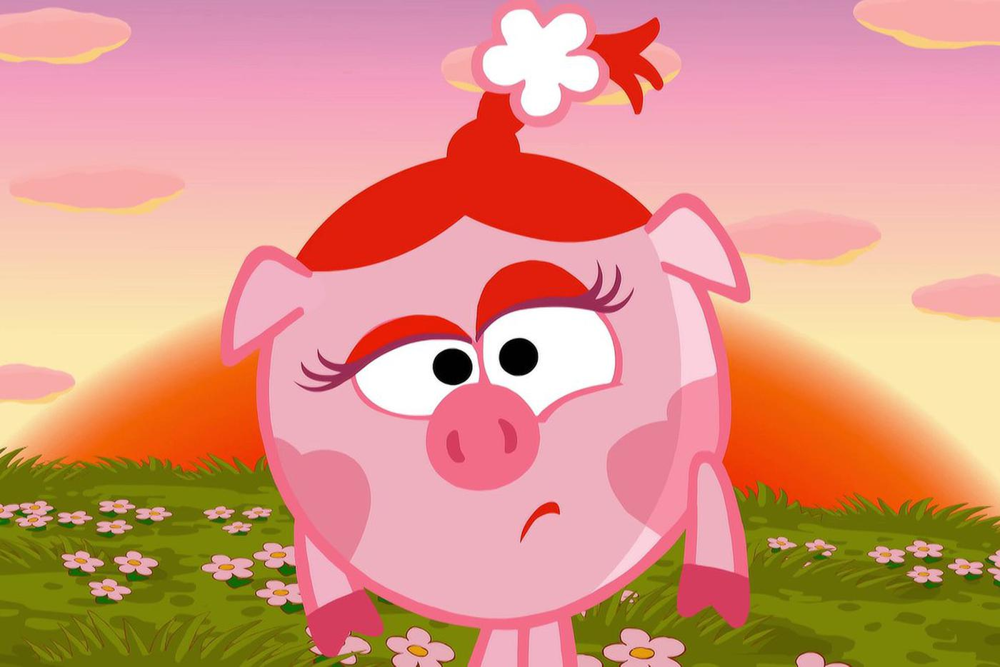
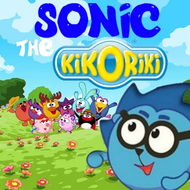
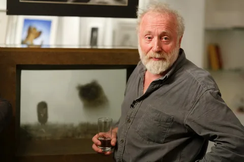
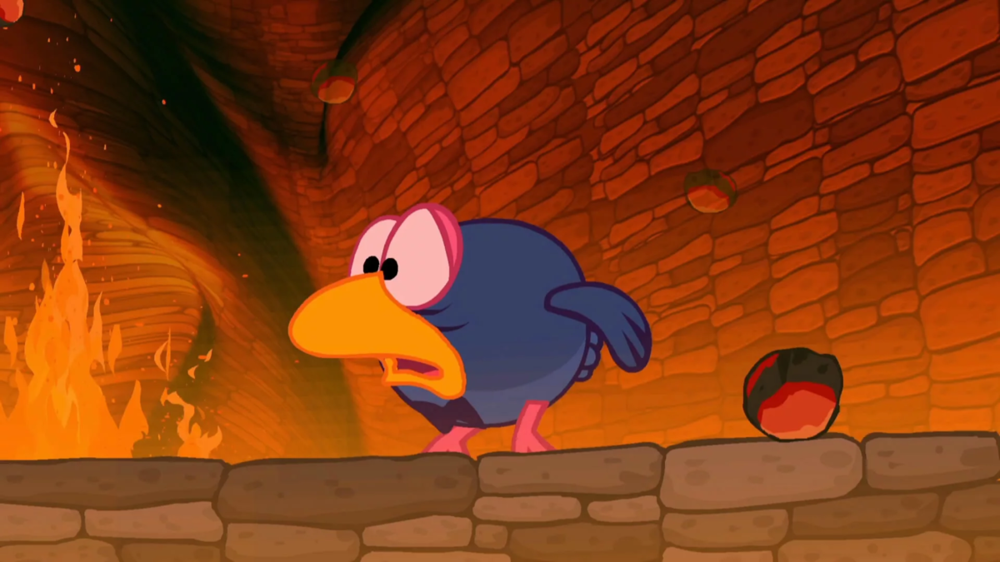
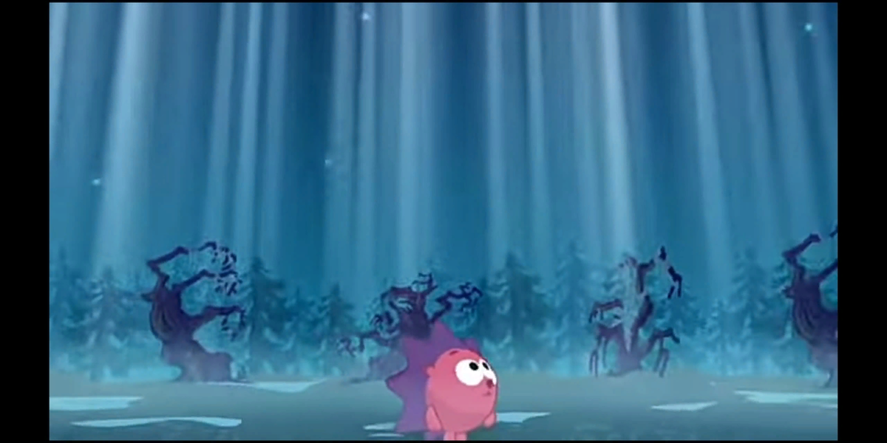
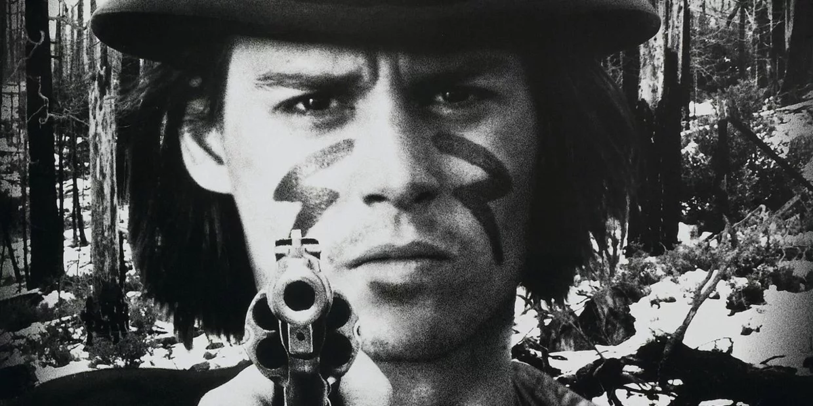
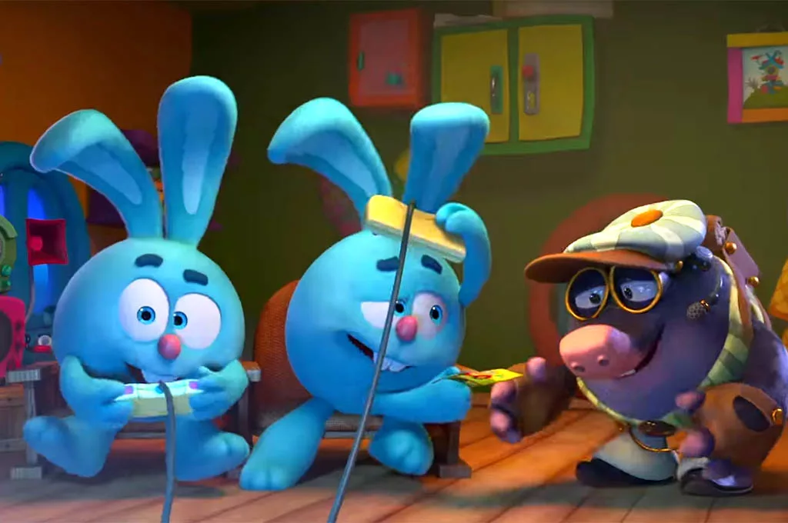
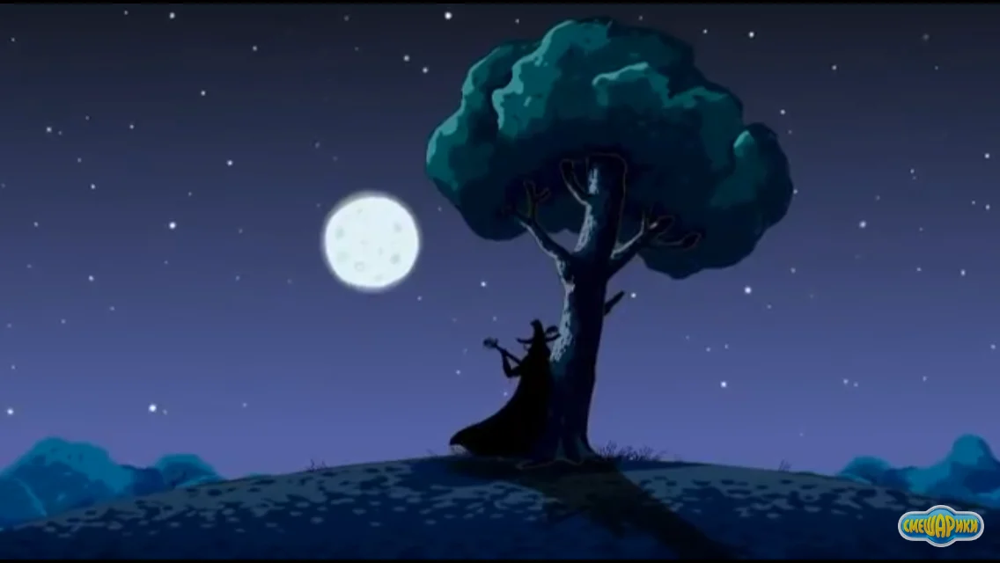

Мультсериал и его спин оффы длятся очень долго, а если учесть полнометражки и азбуки, то получается вообще заоблачная цифра. Если соединить это всё, то в общей сложности получится больше 4 000 минут. Даже Игра Престолов уступает по длительности.

Одно из персонажей знаменитого сериала, а именно Тириона Ланнистера, озвучивает Михаил Черняк. Этот актёр известен ещё тем, что озвучивает Пина, Лосяша и Копатыча в Смешариках.
Казалось бы, при чём тут Соник? А вот при чём. На английском языке Карыча дублирует Майк Поллок, актёр озвучивающий Эггмана из Соника, Дэн Грин дублирует Кроша и озвучивает кучу персонажей из игр про синего ежа. Но самая интересная роль у Джейсона Гриффита. Его персонажи - ёжики. Да, вы правильно поняли, Соника и Ёжика озвучивает один и тот же актёр. Вот такое вот забавное совпадение.

Художественный руководитель сего проекта, Анатолий Прохоров был близко знаком со знаменитым Юрием Норштейном. Думаю каждый знает его артхаусный шедевр "Ёжик в тумане". Именно по инициативе Прохорова была отснята серия "Ёжик в туманности". Так Прохоров можно сказать отдал уважение своему другу.

Если спросить у любого фаната Смешариков, когда они стали трёхмерными, то он скорее всего ответит, что в 2011 году, когда вышел фильм Начало. И будет в корне не прав. Ещё в оригинальном мультсериале появлялись вставки с использованием 3D. Например в серии "Без никого" Ёжик в одной из сцен выполнен, как трёхмерная моделька. Или же в серии "Снотворец" стены подземелья, в которое попадает Карыч тоже объёмное, а не плоское.


На первом кадре можно заметить объемный задний фон, а на втором изображении сам ежик объемный.
"Смысл жизни" считается самоё философской серией всего проекта, причём полностью заслужено. Но сейчас я хочу обратить внимание на отсылку, которая довольно сильно меняет восприятие эпизода. Весь он во многом копирует сюжет артхаусного фильма Джима Джармуша "Мертвец". В нём молодой герой сбегает из привычного мира и какое-то время путешествует с индейцем. Я советую посмотреть ролик, описывающий более ясно сюжет сего произведения, а ссылку я оставлю в конце. Поверьте, сходств реально очень много.

Опять же обратимся к х"Дежавю". Вы никогда не задумывались о том, почему агентством по путешествиям во времени заправляют кроты? Тут авторы сделали референс в сторону научной фантастики. Видите ли в ней дыры, сквозь которые можно перемещаться во времени и пространстве , называются Кротовыми. Ну тут дальше ничего объяснять не надо.

Сценарист сериала Алексей Лебедев признавался, что написал несколько серий о смертных грехах. Есть информация, что серии по этим сценариям вышли почти все, кроме эпизода про похоть конечно. Но вроде бы авторы обещали, что экранизируют тот самый сценарий в новом сезоне. А что касается уже выпущенных 6-ти, то они сейчас находятся где-то в конце всего мультсериала.
